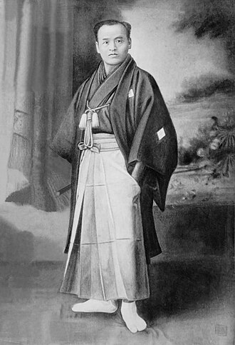

Maestros del Aikido

Fue un legendario maestro de artes marciales japonés, reconocido por ser el responsable de sistematizar y dar a conocer al público el Daito-Ryu Aiki-Jujutsu. Descendiente del histórico clan samurái Takeda, es considerado una figura clave y el mayor puente entre las antiguas tradiciones de combate samurái y las artes marciales modernas.
Debido a su ferocidad y destreza, se ganó el apodo de Aizu Han No Ko Tengu ("El Pequeño Demonio del clan Aizu"). Durante sus viajes por todo Japón, desde Hokkaido hasta Okinawa, se enfrentó a numerosos desafíos en combates reales, ganando fama de ser prácticamente invencible.

("Gran Maestro") es el título honorífico con el que se conoce a Morihei Ueshiba (1883-1969), el célebre artista marcial japonés creador del Aikido.
Su vida estuvo marcada por la transición desde las artes marciales letales de combate hacia una filosofía centrada en la paz, la armonía y la resolución de conflictos sin violencia. Ueshiba nació en Tanabe, Japón, y desde joven mostró un gran interés por las artes marciales, entrenando en diversas disciplinas como el jujutsu, el kenjutsu y el bojutsu. Sin embargo, fue su encuentro con el maestro Sokaku Takeda lo que influyó profundamente en su desarrollo marcial.
A través de su entrenamiento con Takeda, Ueshiba adquirió habilidades excepcionales en técnicas de combate, pero también comenzó a cuestionar la naturaleza violenta de estas artes. Con el tiempo, Ueshiba desarrolló una nueva forma de arte marcial que enfatizaba la armonía y la no resistencia, dando origen al Aikido. Su enfoque se centraba en redirigir la energía del atacante en lugar de confrontarla directamente, promoviendo así la idea de que la verdadera fuerza reside en la capacidad de adaptarse y fluir con las circunstancias. A lo largo de su vida, O-Sensei enseñó a numerosos estudiantes y dejó un legado duradero que continúa inspirando a practicantes de Aikido en todo el mundo.

Nacio en Japon el 30 de octubre de 1954 y cuando tenia dos años, sus padres mudaron su residencia a Paraguay y luego a Argentina donde curso sus primeros estudios.
En 1972 regreso a Japon donde se aboco al estudio de las Artes Marciales. Alli obtuvo su Primer Dan de Aikido -Kuwamori Dojo-; su Primer Dan de Karate -Karate Kyokushinkai- y su segundo Dan de Judo -Judo Kodokan-.
A la par, tambien estudio Alineacion Postural -Seiseijutsu- con el Profesor Sokabe; Acupuntura -Hari Kiu- con el Dr. Sugawara y Quiropraxia -Sei Fuku Shi- en el Instituto Judo Sei Fuku Shi Kai.-
En junio de 1978 volvio a la Argentina, abocandose desde entonces y entre otros, a la difusion del Arte Marcial "Aikido".-
Fue Director General del Centro de Difusion del Aikido de la Republica Argentina reconocido por la organizacion internacional Hombu Dojo con sede en Japon, quien en 2007 lo reconocio con el grado de "Shihan".-
Con treinta y cuatro años de impecable trayectoria, cuenta en su haber no solo con innumerables seminarios y charlas -dictados tanto a nivel nacional como internacional- sino tambien con la publicacion de reportajes y articulos en revistas dedicadas a las artes marciales, siendo de su autoria el libro "Aikido Una forma de vida" y de coautoria con el Profesor Leandro Pinkler, las obras "Aikido 1. El desafio del conflicto" (2003, Ed. Kier); "Aikido 2. Vencete a ti mismo y venceras todo" (2007, Editorial Kier) y "Aikido 3. El Guerrero Espiritual" (2010, Editorial Kier).-
El 08-01-12, Aikikai Hombu Dojo le otorgo la graduacion de 7mo dan de Aikido, engrandeciendo aun mas al Centro de Difusion del Aikido. Lamentablemente, SAKANASHI Masafumi shihan fallecio el 10 de febrero de 2012.